L4 Configure and Manage Virtual Networks
1 Create connectivity between virtual network
1-1 VNet Peering Overview
- Connect two Azure networks
- Traffic never leaves the Microsoft backbone
- Traffic between the peered networks is private
- Peer across subscriptions and regions
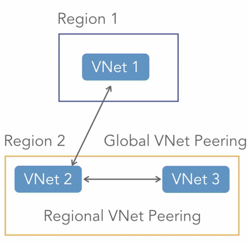
1-2 VNet to VNet Connections
- Requires VPN Gateway
- Geo-presence and geo-redundancy;
- isolate regional multi-tier applications
- VNets in different subscriptions must be configured using PowerShell
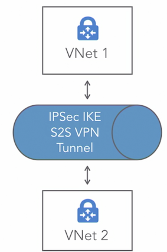
1-3 Virtual Network Gateway
- Connect Azure VNet to another Azure VNet
- Connect Azure VNet to on-premises
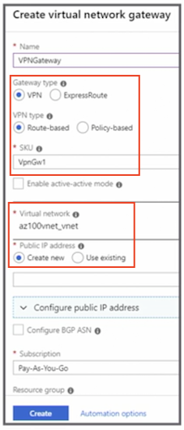
1-4 Key Points
- Know how to create a VNet, subnet, and gateway
- Know when to use PowerShell to create a connection
- Know that connecting networks need to be configured in both directions
- VNet peering uses internal DNS only
2 Implement and manage virtual networking
2-1 Virutal Networks
- Isolation and segmentation
- Each VNet is isolated from other VNets
- Resources have outbound access to the Internet by default
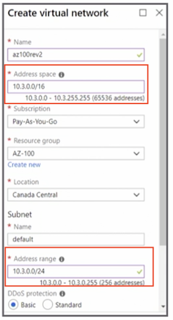
2-2 Network Interface
- Only a private IP address is configurable
Public IPis assigned automatically when theNICnetwork interface card (NIC) is associated to a virtual machine- Configure the NIC with a public IP without the virtual machine use CLI or PowerShell
- New-AzureRMNetworkInterface
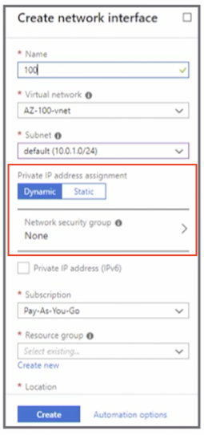
2-3 Network Subnets
- Used to divide the network
- Subnet must fall within the VNet address space
- Azure reserves
five IPaddresses in the subnet range
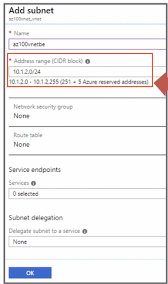
2-4 System Routes
- Automatically created and assigned to each subnet
- System routes cannot be deleted or created
- Override system routes using custom routes
2-5 Create Custom Routes
- Create a route table
- Border gateway protocol (BGP):
- an
on-premisesnetwork gateway - Azure VNet gateway (a separate route is created)
- an
- Typically, BGP is used for ExpressRoute configurations
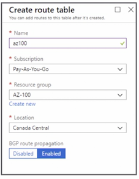
2-6 Add a route
- Define route specifying the next hop
- Next hop can be a virtual appliances, virtual network gateways, virtual network, or the Internet
- Associate the route to a subnet
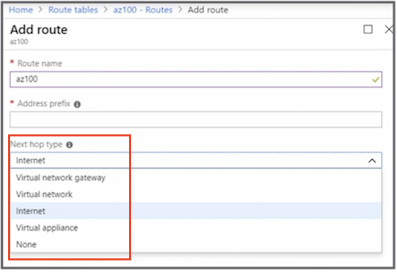
2-7 Public IP
- Allows communication with Internet resources
- SKUs
Stock Keeping Unit(shapes of the product): Basic or Standard - Static allocation assigns the IP when the resource is created
- Dynamic allocation assigns the public IP after it is associated to an Azure resource (default setting)
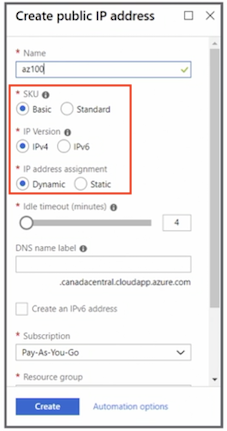
2-8 Public IP Resources
- Virtual machine network interfaces (static and dynamic)
- Internet-facing load balancers (static and dynamic)
- VPN gateways (dynamic)
- Application gateways (dynamic)
2-9 Private IP
- Enables Azure resources to communicate
- Dynamic
- Assigns the next available unassigned address
- Default setting
- Static Azure selects and assigns the IP
We can't select that, it is done automatically for us
2-10 Private IP Resources
- Virtual machine network interfaces (dynamic and static)
- Internal load balancers (dynamic and static)
- Application gateways (dynamic and static)
2-11 Key Points
- Know how to create multiple subnets
- Understand what happens if you create a subnet that is too small
- Know when to use a user-defined route (UDR)
- Know the default hops in a system route
- Review private and public IPs (dynamic and static)
3 Configure name resolution (DNS)
3-1 Name Resolution that uses DNS servers
- Hybrid
- Virtual machines in different VNets
- Name resolution for web apps
- Virtual machines added before the custom DNS server was added will need to be rebooted
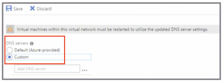
3-2 DNS Zone
- Host DNS records for your domain
- Public: Internet-facing DNS domains
- Private: Eliminates the need for a custom DNS server
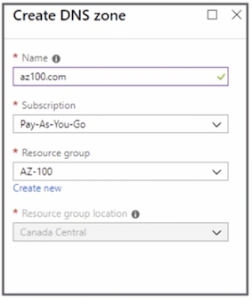
3-3 Add a Record
- Name that the IP address will be resolved to
- Type of DNS record to create
- TTL and TTL unit
- IP address that the type resolves to
Alias record set
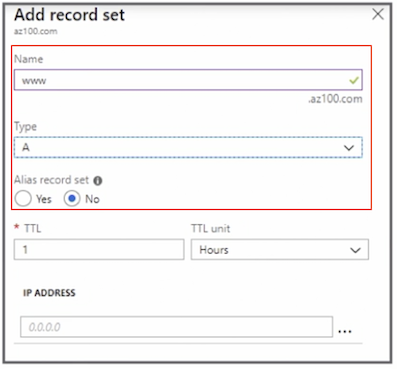
**3-4 DNS Alias Record Set **
- References other Azure resources in the Azure DNS zone
- Only supported on A, AAAA, and CNAME record types
- Alias records automatically update during DNS resolution
- Prevents dangling DNS records when an application IP changes or references an Azure
Traffic Managerprofile for the domain name apex
3-5 Create DNS and Record Using PowerShell
#1. Create a DNS Zone
New-AzureRmDnsZone -Name abc.com -ResourceGroupName ResourceGroup
#2. Create a DNS Record
New-AzureRmDnsRecordSet -Name www -RecordType A -ZoneName abc.com -ResourceGroupName ResourceGroup -Ttl 3600 -DnsRecords (New-AzureRmDnsRecordConfig -IPv4Address "10.0.1.4")
3-6 Delegate a Domain to Azure DNS
- When delegating a domain to Azure DNS, the name servers will be needed
- Name servers will need to be added to the registrars
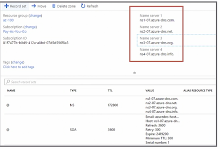
3-7 Custom DNS Settings for a Web App
- A record to map a root domain
- CNAME record to map a subdomain or wildcard domain
- Not supported in the F1 tier (free tier)
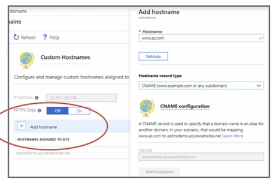
3-8 Key Points
- Know when to use your own DNS server
- Know when to use an alias record set
- Understand how to configure a custom DNS record for web apps
4 Create and configure a network security group (NSG)
4-1 Network security group
- List of security rules
- Allow or deny traffic
- Associated with a subnet or network interface
- Microsoft recommends associating with a subnet instead of a network interface
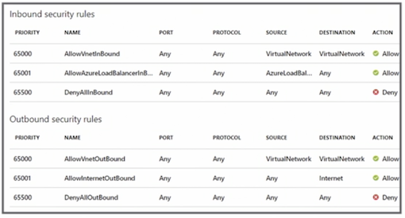
4-2 Create Security Rules
- Source and source port ranges
- Destination and destination port ranges
- Protocol (any, TCP, UDP)
- Action (allow or deny)
- Priority
- Rule name
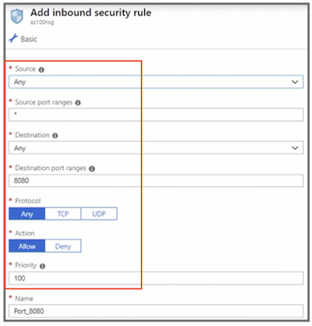
4-3 Associate NSG to a subnet
- Choose a virtual network
- Choose a subnet
- NSG cannot be applied to a gateway subnet
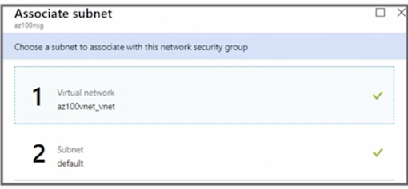
4-4 Associate NSG to a Network Interface
- Must be in the same location and subscription
- NSG will overwrite existing NSG
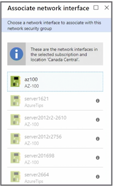
4-5 Log NSG Traffic
- Network Watcher
- Enables NSG flows
- Requires a storage account
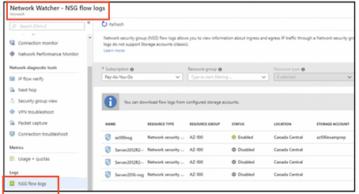
4-6 Evaluate Effective Security Rules
- Networking from the virtual machine blade
- Only the top 50 rules are shown
- Download .csv for all rules
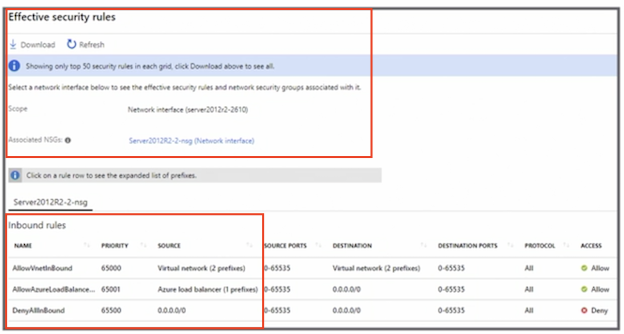
4-7 Key Points
- Know the default inbound and outbound security rules
- Priority: the lower the number, the higher the priority
- NSG must be in the same location as the virtual network
- If applying an NSG to a virtual machine and the subnet, the allow rule must be allowed at both levels or the traffic will be blocked
- NSG cannot be applied to a gateway subnet
5 Implement Azure Load Balancer
5-1 Types of Load Balancers
-
Public
- Load balancing incoming traffic
- Outbound connectivity for internal virtual machines
-
Internal
- Load balancing internal traffic
5-2 Load Balancer
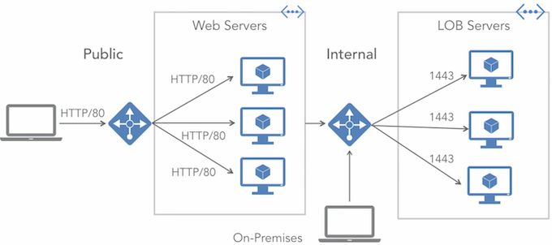
The internal load balancer can also manage the traffic coming from VPN connection from the on-premises environment This eliminates the traffic from traversing the internet
5-3 Sku Comparsion
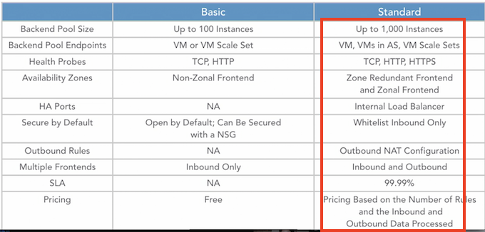
MC does recommend using the standard SKU
5-4 Load Balancing Rules
Direct incoming traffic backend resources
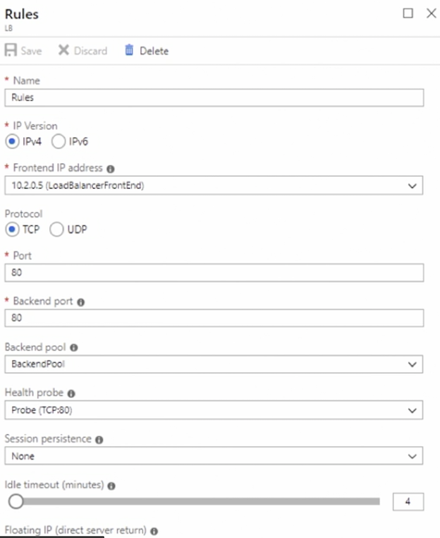
5-5 Configure Internal Load Balancer
- Requires a private IP address
- Sits behind the external load balancers
5-6 Configure Public (External) Load Balancer
- Required when deploying virtual machine scale sets
- Requires a public IP address
- Load balances all traffic
5-7 Troubleshoot Load Balancer
- Virtual machine is unhealthy
- Virtual machine is not listening on the probe port
- Probe port is closed;
- Probe not listening on the correct port
- Network security group (NSG)
- Firewall is blocking the probe port
5-8 Key Points
- Know how to configure a load balancer, including health probes
- Know the difference between the SKUs
- A single load balancer cannot be both internal and public (external)
6 Monitor and troubleshoot virtual networking
6-1 Azure Monitor
- Monitor and visualize metrics
- Query and analyze logs
- Set up alert and conditions
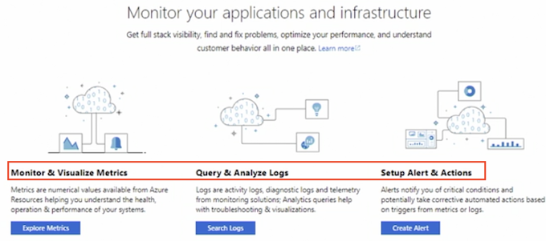
6-2 Network Watcher
- Monitoring
- Network diagnostic tools
- Metrics
- Logs
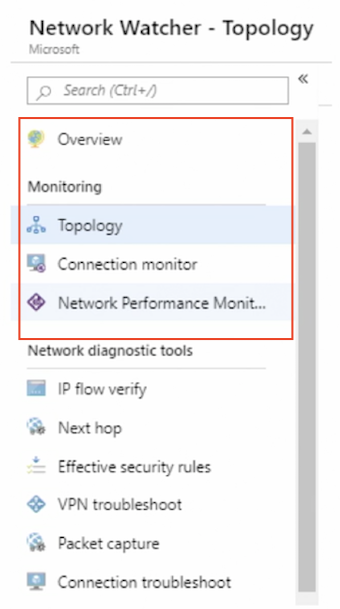
6-3 Network Watcher: Monitoring
- Topology
- Connection monitor
- Network （performance monitor）
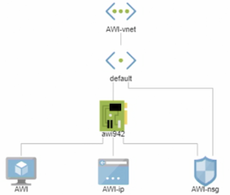
6-4 Network Performance Monitor
- Monitor on-premises connectivity
- Monitor loss and latency
- Monitor the health of the network without SNMP
6-5 Network Watcher: Network Diagnostic Tools
- IP flow verify
- Next hop
- Effective security rules
- VPN troubleshoot
- Packet capture
- Connection troubleshoot
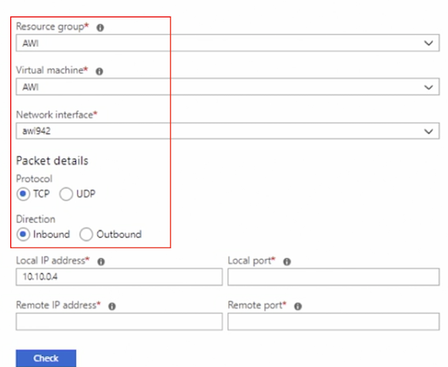
6-6 Network Watcher: Metrics
- Usage and quotas
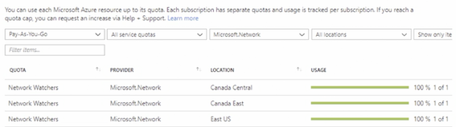
6-7 Network Watcher: Logs
- NSG flow logs
- Diagnostic logs
- Traffic analytics
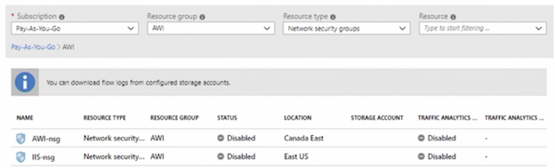
6-8 Security Center
- Network map for security
- Network recommendations
- Just-in-time access
- NSGs
- Firewall
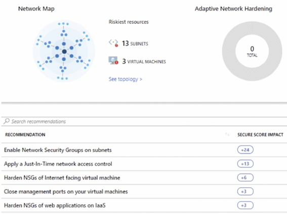
6-9 Key Points
Know which tool does what
- Network Monitor - provides metrics and logs and creates alerts
- Network Watcher - can monitor and diagnose virtual networks
- Security Center - provides recommendations to secure the virtual networks
7 Integrate on-premises network with an Azure Virtual Network
7-1 VPN Gateway
- Passes encrypted traffic between on-premises and Azure over the internet
- Requires a gateway subnet
- Four SKU types
7-2 Gateway SKU
- Basic Does not support IKEv2 or BGP (no ExpressRoute)
- VpnGw1 - throughput bandwidth at 650 Mbps
- VpnGw2 - throughput bandwidth at 1 Gbps
- VpnGw3 - throughput bandwidth at 1.25 Gbps
7-3 Virtual WAN
- Optimized branch connectivity to Azure
- Hub and spoke
- Requires more than 30 site-to-site VPN tunnels
Make sure your subnets from on-premise and into Azure cannot overlap
7-4 Site to Site
- Policy-based and route-based routing
- Active-passive or active-active
7-5 Point to Site
- Used to connect clients
- Dedicated VPN device or public-facing IP are not required
SSTP or IKEv2- Route-based routing
- Active-passive
7-6 ExpressRoute
- Active-active
- BGP
- Direct connect
Direct connect between your on-premise environment and Azure through 3rd party supplier
Traffic does not over the internet
7-7 Key Points
- Know the differences between site to site and point to site
- Know when to use S2S or P2S
- Compare and contrast gateway SKUs